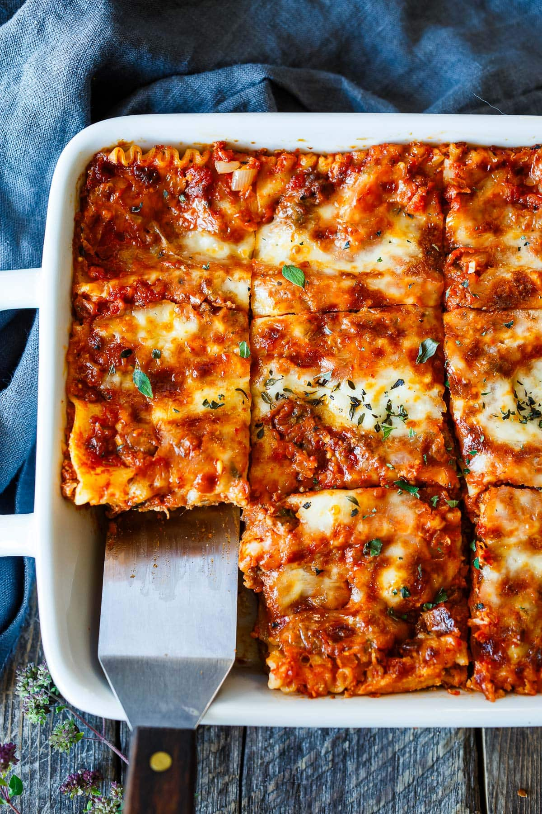

Home
Lasagna Recipe

Description
This classic lasagna recipe is the ultimate comfort food. Made with rich tomato-meat sauce, three cheeses, and Italian spices, it’s easy to make and always a crowd-pleaser!
For over a decade, this homemade lasagna recipe was a staple in our catering business, from small gatherings to corporate events. I can’t tell you how many people told us that this was the best lasagna they’d ever had!
Eventually, this became the meal I would make family and friends who needed a home-cooked meal dropped off when life became overwhelming, or there was a hardship.
Ingredients
1 pound of Italian sausage (I use lean ground beef)
1 clove garlic, minced (more if you love garlic as much as we do)
1 tablespoon whole basil (I use dry and it works fine)
1 1/2 teaspoons salt
2 (6-ounce) cans tomato paste
1 (1-pound) can of tomatoes (I now use the large 28-ounce can of diced tomatoes)
10 ounces lasagna noodles
2 eggs
3 cups fresh Ricotta cheese
1/2 cup grated Parmesan cheese (I use Kraft grated Parmesan in the green can, but you can use fresh if you like)
2 tablespoons parsley flakes (dried works fine)
1 teaspoon salt
1/2 teaspoon pepper
1 pound mozzarella cheese, sliced very thin or grated (I’ve gotten lazy over the years and now buy my mozzarella pre-grated)
Steps
Preheat the oven to 375 F.
Brown meat slowly. Spoon off excess fat.
Add the next five ingredients and 1 cup of water. Simmer, covered, 15 minutes. Stir often.
Cook noodles in boiling salted water till tender. Drain and rinse.
Beat eggs and add the remaining ingredients, except the mozzarella. (I have this going while I'm making the sauce).
Layer half the noodles in a 13x9x2-inch baking dish. Spread with half the Ricotta filling, add half the mozzarella cheese, and half the meat sauce. Repeat.
Cover with foil and bake at 375 for about 30–45 minutes. Remove foil for the last 10 minutes. I usually save some of the grated mozzarella and melt that on top during that last 10 minutes until it gets nice and bubbly.
You can also assemble early and refrigerate. If you do this, bake it for one hour.
Let stand 10 minutes before serving.
Serves: 8–10